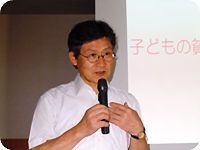
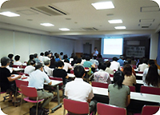

第46回埼玉県消費者大会 第2回プレ学習会 報告
- 【日時】
- 8月26日(木)10:00～12:00
- 【場所】
- さいたまコープコーププラザ浦和3階会議室
- 【参加者】
- 59人
■学習会
｢高校中退から子どもの貧困を考える～学校・社会から排除される子どもたち～」
講師 青砥 恭氏(明治大学・埼玉大学講師)
＜要旨＞
（1）学力は競争の手段ではなくて、｢生活の手段｣と考えます。
若者の貧困を食い止めるにはどうしたらいいのか、考える必要があります。生活や住居、健康の相談で関わるホームレスの人は、8割が中卒か高校中退。全国の高校中退率は8％で約10万人。その中に定時制や通信制への転学の生徒数は含まれていません。定時制生徒の卒業数は、入学時の半分です。社会階層とつながった学校序列が表れています。中退した生徒から聞き取りをすると、親からのDVやネグレクトに行き場を失い、放浪して貧困につながる例などがあります。定時制高校は、今、入学倍率が1倍になり、学級人数も40人と、過去に例がないほどの人数です。
（2）格差と貧困が子どもから意欲を奪う。
中3までに、親の経済力による学力格差は大きく広がっています。平成16年入学者の中退率は、進学校が3％に対し底辺校では約33％までに増加。しかも、殆ど1年生の時点での中退です。家庭の崩壊と学校からの脱落に、家族とのつながりを避け、しかも救急車の呼び方を知らない、保険証も持てない状態になってしまっている子もいます。
（3）親から子への貧困の連鎖
論理的な話し方や知的興味関心、欲求と目標に向けての時間のコントロールのバランスなど、幼少期から影響しています。イギリスでは、日本をモデルに、子ども・若者の貧困を断つために、教育の早期介入を取り入れました。
（4）社会的排除を教育から防止するには何が必要か。
若年層の社会的排除を防止する若年政策が日本にはありませんでした。今後、埼玉では教育、職業、住宅の3事業が始まります。
（5）9月からスタートする｢彩の国 子ども若者支援ネットワーク｣
将来的目標は、親から子どもへの貧困の連鎖を断つこと。貧困世帯の子育て・高校進学･卒業・就業・の各支援、地域の子育て相談施設として、｢福祉行政｣｢学校｣｢地域社会｣をつなぐネットワークをめざすものです。社会的絆が切れないよう、支援するサポーター組織が必要。親・本人との信頼関係づくり、子育て支援、相談業務、学習教室で意欲を育てる、寄り添い型支援をします。
「まずはご飯を食べて、勉強することから。」と今後の取り組みを意欲的に語られました。